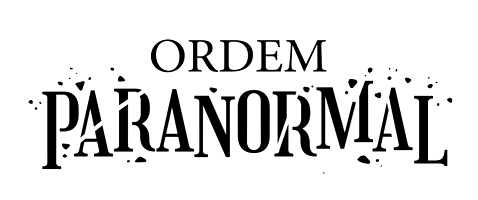
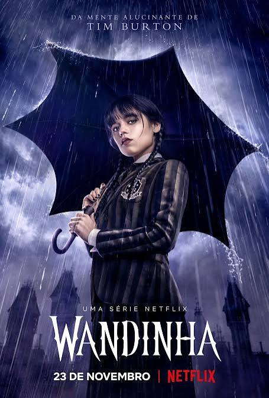
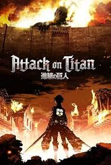

Ordem Paranormal acompanha uma organização secreta de agentes que investigam e combatem ameaças sobrenaturais para proteger a realidade

Wandinha (Wednesday) acompanha Wandinha Addams após ser expulsa de sua escola comum e matriculada na Academia Nunca Mais (Nevermore), um internato para jovens com habilidades paranormais e criaturas sobrenaturais. Enquanto tenta dominar seus próprios dons psíquicos, ela investiga uma onda de assassinatos macabros na cidade vizinha e desvenda um mistério do passado envolvendo os seus pais.

Após a eliminação do Japão na Copa do Mundo de 2018, a união de futebol cria o Blue Lock, um centro de treinamento radical que reúne 300 jovens atacantes do ensino médio. Sob o comando do excêntrico técnico Jinpachi Ego, o projeto busca criar o maior artilheiro e "mais egoísta" do mundo por meio de uma competição implacável onde perdedores perdem o direito de defender a seleção nacional

Attack on Titan (Shingeki no Kyojin) se passa em um mundo onde a humanidade quase foi extinta por criaturas gigantes chamadas Titãs. Os sobreviventes vivem protegidos por três enormes muralhas concêntricas

Em The Boys, super-heróis são tratados como celebridades e controlados pela poderosa empresa Vought International. No entanto, muitos abusam de seus poderes e se corrompem. Um grupo de vigilantes sem poderes, liderado por Billy Bruto e com a ajuda de Hughie, decide expor e combater esses falsos salvadores